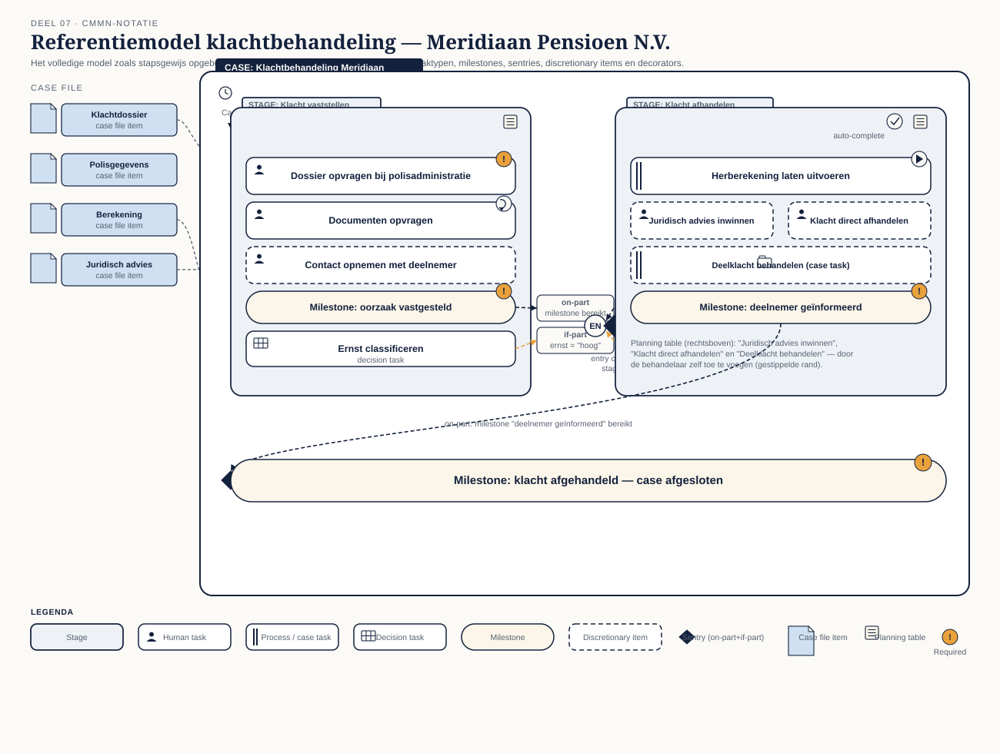

Deel 7 — CMMN basis
Reader · Ductus-cursus BPMN, CMMN & DMN · niveau 1 (fundament) · deel 7 van 30 · studielast ± 5 uur
Dit materiaal bereidt voor op het examen OCEB 2 Fundamental van de Object Management Group en op het BPM+ Certificate van BPMInstitute.org. Het is geen vervanging van het officiële examenmateriaal. Let op: CMMN wordt door minder platformen volledig ondersteund dan BPMN en DMN (zie deel 1, §1.3). De denkwijze is desondanks onmisbaar voor dossierwerk. Conductus ondersteunt CMMN-modellering; raadpleeg de actuele documentatie voor de stand van de uitvoeringsondersteuning.
Leerdoelen
Na dit deel kun je:
- Uitleggen waarom een dossier geen proces is en wanneer die denkwijze van toepassing is.
- Case file en case file items toepassen als informatiedrager in een casemodel.
- De vier taaktypen, stages en milestones correct gebruiken.
- Sentries opstellen met entry- en exit-criteria, on-part en if-part.
- Discretionary items en de planning table toepassen als kern van CMMN.
- De vijf decorators (required, repetition, manual activation, auto-complete) correct toepassen.
- Een eenvoudig casemodel opstellen voor een dossierbehandeling bij Meridiaan.
7.1 Waarom een dossier geen proces is
Deel 1, §1.1 onderscheidde dossierwerk van routinewerk: geen vaste volgorde, een behandelaar die op grond van wat er binnenkomt bepaalt wat er nu moet gebeuren. BPMN, hoe rijk ook na deel 3 en 4, blijft in de kern een taal voor volgorde: zelfs de meest complexe combinatie van gateways en events beschrijft uiteindelijk een gestructureerd pad door het proces.
Case Management Model and Notation (CMMN) kiest een ander uitgangspunt. In plaats van de volgorde vast te leggen, legt CMMN vast: welke informatie er is (het dossier), welke dingen er kunnen gebeuren (de taken en processen die beschikbaar zijn), en onder welke voorwaarden ze relevant worden (sentries). De volgorde zelf ontstaat tijdens de uitvoering, gestuurd door de behandelaar en door wat het dossier op dat moment bevat — niet vooraf door de modelleur bepaald.
Dit is een fundamenteel andere modelleerhouding. Bij BPMN vraag je: "wat gebeurt er hierna?" Bij CMMN vraag je: "wat zou hier kunnen gebeuren, en wanneer wordt dat relevant?" Een modelleur die voor het eerst CMMN gebruikt en toch een vaste volgorde probeert af te dwingen, bouwt in feite een BPMN-model met CMMN-symbolen — een van de antipatronen die in deel 8 expliciet wordt behandeld.
Casusfragment — Meridiaan Pensioen N.V. Een klacht over een pensioenberekening komt binnen. De behandelaar kan het dossier opvragen bij de polisadministratie, contact opnemen met de deelnemer, een herberekening laten uitvoeren, juridisch advies inwinnen, of de klacht direct afhandelen als de oorzaak evident is. Welke van deze stappen nodig zijn, in welke volgorde, en of ze allemaal nodig zijn, hangt af van wat de klacht precies inhoudt — dat wordt pas duidelijk terwijl het dossier zich vult. Twee klachten die op het eerste gezicht identiek lijken, kunnen volledig verschillende paden doorlopen.
7.2 Case file en case file items
Het case file is het geheel van informatie dat bij een dossier hoort — vergelijkbaar met een fysiek dossiermapje, nu digitaal. Het case file bestaat uit case file items: individuele stukken informatie, documenten, of gegevens die gedurende de behandeling worden toegevoegd, gewijzigd, of geraadpleegd.
Het cruciale verschil met data objects in BPMN (deel 3, §3.6): in BPMN is een data object meestal ondergeschikt aan de activiteiten — het proces stuurt, de data volgt. In CMMN is het case file vaak de motor van het model: een sentry (§7.4) reageert op een wijziging in een case file item, en die wijziging maakt vervolgstappen beschikbaar. Het dossier stuurt het gedrag van het model, niet andersom.
7.3 Stages, tasks en milestones
Een case bevat een of meer elementen die samen het werk beschrijven:
- Stage — een groepering van werk, vergelijkbaar met een subprocess in BPMN maar zonder verplichte volgorde tussen de elementen erin. Een stage kan andere stages, tasks en milestones bevatten.
- Task — een eenheid werk binnen de case, in vier vormen:
- Human task — werk dat door een mens wordt uitgevoerd, vaak met een formulier of werkinstructie.
- Process task — een aanroep naar een BPMN-proces (het koppelpunt tussen CMMN en BPMN, verder uitgewerkt in deel 8).
- Decision task — een aanroep naar een DMN-beslissing (het koppelpunt tussen CMMN en DMN).
- Case task — een aanroep naar een andere, onderliggende case — bruikbaar wanneer een dossier zelf weer deeldossiers bevat.
- Milestone — een betekenisvol punt dat bereikt is, zonder zelf werk te zijn. Geen activiteit, maar een markering: "oorzaak vastgesteld", "deelnemer geïnformeerd". Milestones geven een behandelaar en een toezichthouder houvast in een model zonder vaste volgorde — een manier om voortgang zichtbaar te maken zonder een pad voor te schrijven.
7.4 Sentries: entry- en exit-criteria
Een sentry bepaalt onder welke voorwaarde een element beschikbaar komt (entry criterion) of wordt afgesloten (exit criterion). Een sentry combineert twee soorten voorwaarden:
- On-part — reageert op een gebeurtenis: het voltooien van een andere taak, het bereiken van een milestone, een wijziging in een case file item.
- If-part — een aanvullende voorwaarde (vergelijkbaar met een FEEL-expressie) die naast de gebeurtenis waar moet zijn wil de sentry vuren.
Een taak kan bijvoorbeeld pas beschikbaar komen (entry criterion) zodra de milestone "oorzaak vastgesteld" is bereikt (on-part) én de klacht een bepaalde ernstclassificatie heeft (if-part). Zonder die combinatie blijft de taak niet-beschikbaar voor de behandelaar.
Sentries zijn het mechanisme waarmee CMMN "gestuurd door het dossier" concreet maakt: niet de modelleur bepaalt wanneer iets gebeurt, maar de toestand van het dossier op enig moment, vergeleken met de voorwaarden die in de sentries zijn vastgelegd.
7.5 Discretionary items en de planning table
Dit is het element dat CMMN het scherpst onderscheidt van BPMN. Een discretionary item is een taak of stage die niet automatisch beschikbaar komt via een sentry, maar die de behandelaar zelf, naar eigen inzicht, aan het dossier kan toevoegen wanneer hij dat nodig acht.
De planning table is het mechanisme dat dit zichtbaar maakt: een lijst van discretionary items die op een bepaald moment beschikbaar zijn om toe te voegen, gebaseerd op wat een case planner (vaak dezelfde persoon als de behandelaar) mag inzetten. De behandelaar kiest, het model schrijft niet voor.
Dit is waar de "autonomie van de kenniswerker" — een centraal begrip in casemanagement — expliciet in de notatie landt. Een klachtbehandelaar die op basis van zijn ervaring besluit alvast juridisch advies in te winnen, ook al is dat nog niet "getriggerd" door een sentry, gebruikt een discretionary item. Het model biedt de mogelijkheid; de mens beslist of en wanneer.
Casusfragment — Meridiaan Pensioen N.V. Bij de klachtbehandeling staan "Contact opnemen met deelnemer", "Juridisch advies inwinnen" en "Herberekening aanvragen" als discretionary items op de planning table zodra de case wordt geopend. Een ervaren behandelaar die aan de eerste lezing van het dossier al ziet dat het om een juridisch precedent gaat, voegt "Juridisch advies inwinnen" direct toe — zonder dat een sentry daartoe dwingt. Een minder ervaren behandelaar volgt misschien eerst de gebruikelijke route via "Contact opnemen met deelnemer". Beide zijn geldige paden door hetzelfde model.
7.6 Decorators
Vijf decorators geven een taak of stage extra gedrag, zichtbaar als een klein symbool op het element:
- Required — het element moet voltooid zijn voordat de case (of de stage waarin het zit) als afgerond kan gelden.
- Repetition — het element kan meerdere keren worden uitgevoerd, bijvoorbeeld "Documenten opvragen" dat bij een complex dossier meermaals nodig kan zijn.
- Manual activation — het element wordt niet automatisch gestart zodra zijn entry criterion vervuld is, maar wacht op een expliciete handeling van de behandelaar. Het verschil met een discretionary item: dit element staat al in het model als onderdeel van het vaste plan, maar activeert niet vanzelf.
- Auto-complete — een stage sluit zichzelf automatisch af zodra alle vereiste (required) elementen erin voltooid zijn, ook als er nog niet-vereiste elementen open staan.
Decorators zijn fijnmazige besturing: ze bepalen niet of iets kan gebeuren (dat doen sentries en de planning table), maar hoe het element zich gedraagt binnen het geheel — verplicht of niet, herhaalbaar of niet, automatisch of handmatig gestart.
7.7 Een eerste casemodel
De werkwijze om een casemodel op te bouwen wijkt bewust af van de BPMN-werkwijze uit deel 3, §3.7:
- Bepaal het case file. Welke informatie hoort bij dit dossier, en welke stukken daarvan zijn relevant voor sturing (welke wijziging triggert een sentry)?
- Identificeer de vaste elementen. Welke taken of stages horen sowieso bij dit type dossier, ongeacht het specifieke geval?
- Identificeer de discretionary elementen. Welke taken zijn beschikbaar, maar niet verplicht of automatisch?
- Bepaal de milestones. Welke punten zijn betekenisvol genoeg om te markeren?
- Werk de sentries uit. Voor elk element: wanneer komt het beschikbaar, wanneer sluit het af?
Er is bewust geen stap "happy path eerst" zoals bij BPMN — een casemodel heeft geen enkel voorkeurspad dat als eerste getekend wordt. Wat CMMN wel gemeen heeft met de modelleerdiscipline uit deel 5: houd het model leesbaar door niet elk denkbaar scenario als apart element te modelleren. Een casemodel met vijftig discretionary items is voor een behandelaar net zo onwerkbaar als een BPMN-model met vijftig gateways.
Kernbegrippen
Case — het geheel van een dossierbehandeling · Case file / case file item — de informatie die het dossier vormt en aanstuurt · Stage — een groepering van werk zonder verplichte volgorde · Human / process / decision / case task — de vier taaktypen · Milestone — een betekenisvol, niet-uitvoerend punt · Sentry — de voorwaarde voor entry of exit, met een on-part en een if-part · Discretionary item — een taak die de behandelaar naar eigen inzicht toevoegt · Planning table — het overzicht van beschikbare discretionary items · Case planner — degene die discretionary items inzet · Required / repetition / manual activation / auto-complete — de vier decorators
Examenrelevantie
CMMN is beperkt vertegenwoordigd in OCEB 2 Fundamental; het BPM+ Certificate van BPMInstitute.org toetst CMMN wel volledig en expliciet, als onderdeel van de "triple crown". Beschouw dit deel als voorbereiding op beide: de CMMN-basisbegrippen voor OCEB 2, en de volledige toepassing voor BPM+.
Leeswijzer bij de specificatie
- CMMN 1.1 — hoofdstuk 1 (Scope), hoofdstuk 5.1 (Overview van de kernconcepten), het hoofdstuk over Sentries en Planning Tables
Figurenlijst


